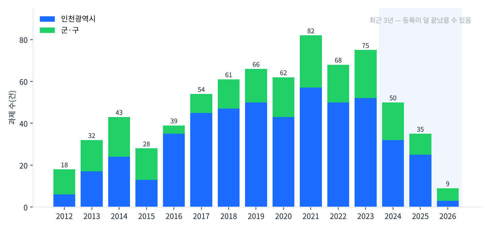
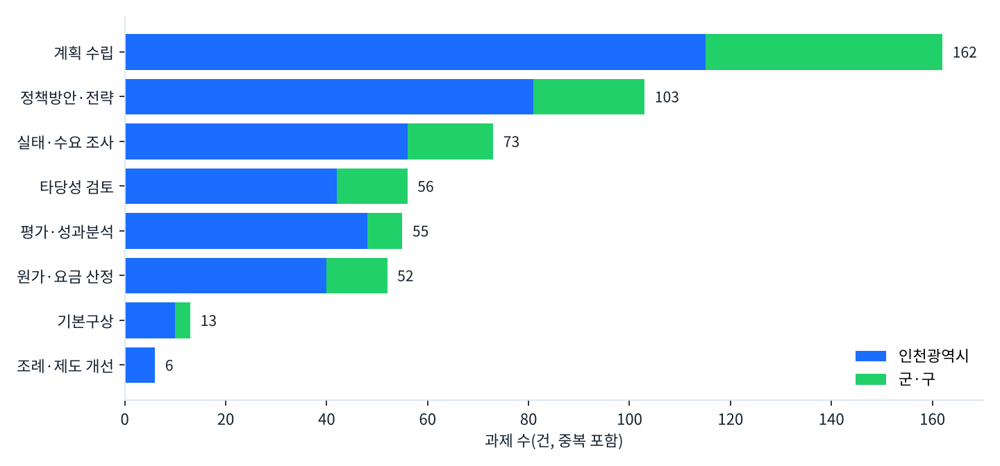
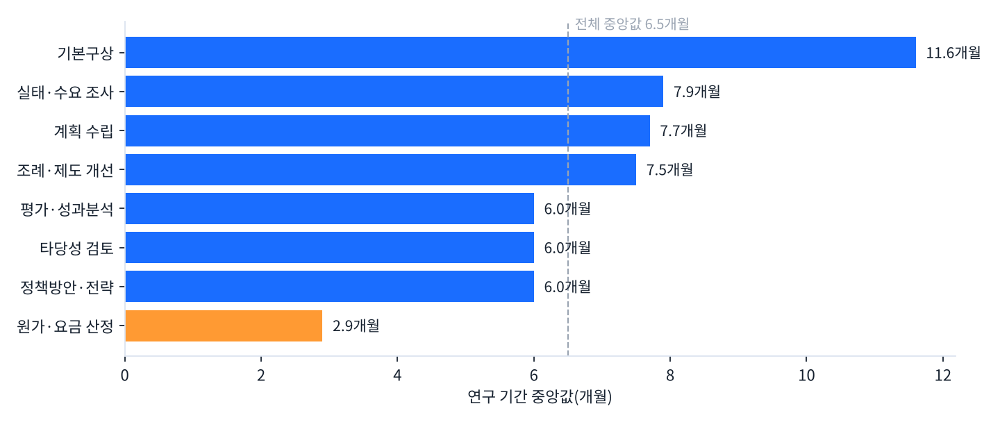

인천 지방정부는 무엇을 연구에 맡기는가
정책연구관리시스템 프리즘 등록 과제 727건의 유형·기간·반복 분석
김갑봉 경세제민 AI·경제연구소 소장 · 발행 2026년 10월 23일
요약
- 인천광역시와 종전 열 개 군·구가 정책연구관리시스템 프리즘에 올린 정책연구 과제는 727건이다. 시가 503건(69.2%), 군·구가 224건이다.
- 과제명으로 가르면 계획 수립이 162건으로 가장 많다. 정책방안·전략 103건, 실태·수요 조사 73건, 타당성 검토 56건, 평가·성과분석 55건, 원가·요금 산정 52건이 뒤를 잇는다.
- 연구 기간의 중앙값은 6.5개월이다. 원가·요금 산정은 2.9개월로 가장 짧고, 기본구상은 11.6개월로 가장 길다.
- 같은 기관이 같은 이름으로 두 번 이상 올린 과제 묶음이 48개, 130건이다. 도시가스 소매공급비용 산정은 2012년부터 2022년까지 11년 연이어 올라 있다.
- 정책연구의 상당 부분은 새 물음이 아니라 주기가 돌아온 물음이다. 반복 과제의 결과를 시계열로 묶고, 법정 계획의 차수를 미리 관리하고, 해마다 맡기는 산정 업무의 기준을 공개하자고 제안한다.
Ⅰ. 연구 배경과 목적
지방정부는 정책을 세우기 전에 바깥 연구자에게 묻는다. 그 물음의 목록이 정책연구 용역이다. 무엇을 묻는지 보면 행정이 무엇을 모르는지, 무엇을 되풀이하는지가 드러난다.
중앙행정기관과 지방자치단체는 정책연구 과제를 정책연구관리시스템 프리즘에 올린다. 과제명, 기관, 연구 시작일과 종료일이 공개된다. 이 공개 목록을 전수로 읽으면 한 지역의 연구 수요를 한눈에 볼 수 있다.
이 보고서는 세 가지를 묻는다. 첫째, 인천의 지방정부는 어떤 종류의 연구를 가장 많이 맡기는가. 둘째, 그 연구는 얼마나 걸리는가. 셋째, 같은 연구를 얼마나 되풀이해 맡기는가. 답을 바탕으로 연구 발주의 효율을 높일 방안을 제안한다.
Ⅱ. 자료와 방법
1. 자료
자료는 프리즘의 공개 과제 검색이다. 관할기관이 인천광역시와 군·구 열 곳(중구, 동구, 미추홀구, 연수구, 남동구, 부평구, 계양구, 서구, 강화군, 옹진군)인 과제를 2026년 10월 15일 17시께 모두 내려받았다. 검색어는 넣지 않았다. 로그인하지 않은 공개 화면에서 받았다.
모두 727건이다. 항목은 기관, 과제명, 연구 시작일, 연구 종료일, 진행 상태다.
2026년 7월 1일 중구와 동구가 폐지되고 제물포구·영종구·검단구가 생겼다. 같은 날 서구는 서해구가 됐다. 네 새 이름으로 올린 과제는 조회 시점에 0건이었다. 이 보고서의 군·구는 종전 열 곳이다.
2. 유형 분류
과제명에 든 낱말로 여덟 유형을 정했다. 한 과제가 두 유형의 낱말을 함께 가지면 두 유형에 모두 넣었다. 그래서 유형별 건수의 합은 727건을 넘는다. 어느 유형에도 걸리지 않은 과제는 265건이다.
| 유형 | 과제명에 든 낱말 |
|---|---|
| 계획 수립 | 기본계획, 종합계획, 중장기, 발전계획, 시행계획, 관리계획, 마스터플랜 |
| 정책방안·전략 | 방안, 전략 |
| 실태·수요 조사 | 실태, 수요조사, 만족도, 설문, 기초조사, 현황조사, 사회지표, 모니터링 |
| 평가·성과분석 | 평가, 성과, 효과분석, 영향분석 |
| 타당성 검토 | 타당성 |
| 원가·요금 산정 | 원가, 요금, 사용료, 수수료, 운임, 공급비용, 단가 |
| 기본구상 | 구상 |
| 조례·제도 개선 | 조례, 제도개선 |
3. 연구 기간과 반복
연구 기간은 종료일에서 시작일을 뺀 날수다. 날짜가 비었거나 0일 이하인 8건을 빼고 719건으로 셌다. 개월은 날수를 30.4로 나눴다.
반복 과제는 과제명에서 연도, 차수, 기관 이름, 「수립」 「용역」 「연구」 같은 꼬리말과 띄어쓰기를 지운 뒤 같은 기관 안에서 같은 이름이 둘 이상 나오는 묶음으로 정했다. 같은 해에 두 번 올라 있는 것은 한 과제를 나눠 올린 경우일 수 있어 따로 밝힌다.
4. 한계
프리즘에 올린 정책연구만 잡힌다. 올리지 않은 소액 용역과 기술용역은 빠진다. 금액은 공개 검색에 나오지 않아 건수만 셌다. 최근 연도는 결과 등록이 끝나지 않은 과제가 빠져 있을 수 있다. 유형은 과제명 낱말로 가른 것이어서 과제의 실제 내용과 다를 수 있다.
Ⅲ. 결과
1. 열에 일곱은 시가 낸다
727건 가운데 인천광역시가 503건이다. 군·구에서는 부평구 43건, 서구 37건, 중구 34건, 연수구 31건, 계양구 25건, 미추홀구 22건이다. 강화군 14건, 남동구 8건, 동구 5건, 옹진군 5건이 뒤를 잇는다.
연구 시작 연도로 보면 2012년 18건에서 2021년 82건까지 늘었다. 2017년부터 2023년까지 일곱 해는 해마다 54건에서 82건 사이다. 2024년 50건, 2025년 35건은 줄어든 것처럼 보인다. 다만 결과 등록이 늦게 끝나는 과제가 있어 최근 세 해의 수는 앞으로 늘 수 있다.

2. 가장 많이 묻는 것은 계획이다
과제명에 계획 낱말이 든 과제가 162건이다. 727건의 22.3%다. 정책방안·전략이 103건, 실태·수요 조사가 73건이다. 타당성 검토 56건, 평가·성과분석 55건, 원가·요금 산정 52건이 비슷한 크기로 뒤를 잇는다.
군·구로 좁히면 계획 수립의 무게가 더 크다. 군·구 224건 가운데 47건이 계획 수립이다. 다섯에 하나꼴이다.
계획 수립 과제의 상당수는 법령이 주기를 정한 계획이다. 교통안전법은 시·군·구에 지역교통안전기본계획을 5년 단위로 세우게 한다. 프리즘에도 그 주기가 보인다. 교통안전기본계획 과제가 2016년(시, 중구), 2021년(시, 부평구), 2026년(중구)에 올라 있다. 다섯 해 간격이다.

3. 반년이면 끝난다, 산정은 석 달이다
연구 기간의 중앙값은 6.5개월이다. 가운데 절반이 4.8개월에서 10.0개월 사이에 든다.
유형별로 차이가 뚜렷하다. 원가·요금 산정은 중앙값 2.9개월로 가장 짧다. 정책방안·전략, 타당성 검토, 평가·성과분석은 6.0개월이다. 계획 수립은 7.7개월, 실태·수요 조사는 7.9개월이다. 기본구상은 11.6개월로 가장 길다.
원가·요금 산정이 짧은 까닭은 일의 성격에 있다. 정해진 산식에 그해 자료를 넣어 값을 내는 일이다. 매번 새 틀을 짜는 연구가 아니다.

4. 같은 물음을 되풀이한다
같은 기관이 같은 이름으로 두 번 이상 올린 과제 묶음이 48개다. 모두 130건으로 전체의 17.9%다.
| 과제 | 기관 | 등록 연도 |
|---|---|---|
| 도시가스 소매공급비용 산정 | 인천광역시 | 2012~2022년 해마다, 11건 |
| 시내버스 경영 및 서비스 평가 | 인천광역시 | 2014~2021년, 2024년, 11건(2017·2018년 두 건씩) |
| 준공영제 시내버스 표준운송원가 산정 | 인천광역시 | 2017, 2018, 2021, 2025년 |
| NSIC 재무회계 조사 | 인천광역시 | 2019, 2021, 2023, 2025년, 격년 |
| 준공영제 시내버스업체 회계감사 | 인천광역시 | 2015, 2020, 2024년 |
| 지속가능발전 보고서 | 부평구 | 2022, 2024, 2026년, 격년 |
| 교통안전기본계획 | 시와 구 여러 곳 | 2012, 2016, 2021, 2026년 |
되풀이의 뿌리는 둘이다. 하나는 법령과 제도가 정한 주기다. 교통안전기본계획이 그렇다. 다른 하나는 해마다 바뀌는 값을 다시 매기는 일이다. 도시가스 공급비용과 버스 운송원가가 그렇다. 시내버스 준공영제 한 분야에서만 경영·서비스 평가, 표준운송원가, 회계감사가 서로 다른 주기로 돌아간다.
Ⅳ. 해석
인천 지방정부가 바깥에 맡기는 연구는 새로운 정책을 찾는 연구보다 정해진 일을 다시 하는 연구 쪽으로 기운다. 계획 수립이 다섯에 하나, 같은 이름의 반복이 여섯에 하나다.
이것이 곧 낭비라는 뜻은 아니다. 법정 계획은 바깥의 전문성과 독립성을 빌리라는 제도의 요구다. 원가와 요금은 이해관계가 걸려 있어 제삼자의 산정이 필요하다.
그러나 같은 일을 해마다 바깥에 맡기면 두 가지 비용이 생긴다. 첫째, 지식이 행정 안에 쌓이지 않는다. 산정의 틀과 자료가 해마다 다른 수행기관에 흩어진다. 둘째, 연도 사이의 비교가 어려워진다. 11년 연속 산정한 도시가스 공급비용도 한 줄의 시계열로 공개돼 있지 않으면 시민은 값이 어떻게 변해 왔는지 알 수 없다.
연구 기간도 같은 말을 한다. 원가·요금 산정이 석 달 안에 끝난다는 것은 일이 정형화돼 있다는 뜻이다. 정형화된 일일수록 기준과 자료를 공개해 누구나 검증할 수 있게 만들 수 있다.
Ⅴ. 제언
- 반복 과제는 시계열로 묶어 공개한다. 같은 이름의 과제 결과를 연도별로 한자리에 모은다. 핵심 수치는 표 한 장으로 따로 낸다. 다음 수행기관은 그 표에서 출발한다.
- 법정 계획은 차수를 미리 관리한다. 법령이 정한 계획마다 직전 차수와 다음 차수의 시작 연도를 부서별로 적어 둔다. 계획 기간이 끝나기 한 해 전에 과업을 설계하면 기간에 쫓기는 발주를 줄일 수 있다.
- 해마다 맡기는 산정 업무는 기준을 공개한다. 원가·요금 산정의 산식, 입력 자료, 가정을 공개 문서로 남긴다. 산정은 바깥이 하되, 기준은 행정이 쥔다.
- 프리즘 등록을 제때 한다. 과제가 끝나면 결과 등록까지 마친다. 등록이 늦으면 다른 기관이 같은 연구를 다시 맡길 수 있다.
Ⅵ. 남은 물음
금액을 보지 못했다. 같은 건수라도 금액의 무게는 다르다. 나라장터 계약 자료와 프리즘 과제를 이으면 유형별 예산의 크기를 잴 수 있다. 연구 결과가 실제 정책에 얼마나 반영됐는지도 이 자료로는 알 수 없다. 프리즘의 진행 상태는 727건 가운데 726건이 「연구결과활용」이어서 구별력이 없다. 두 물음은 다음 연구로 넘긴다.
참고문헌
- 정책연구관리시스템 프리즘. 과제정보 공개 검색(관할기관 인천광역시와 군·구 10곳). 2026년 10월 15일 17시께 조회. https://www.prism.go.kr
- 「교통안전법」 제17조(지역교통안전기본계획). 국가법령정보센터. https://www.law.go.kr
- 「사회보장급여의 이용·제공 및 수급권자 발굴에 관한 법률」 제35조(지역사회보장에 관한 계획의 수립). 국가법령정보센터. https://www.law.go.kr
- 「인천광역시 제물포구·영종구 및 검단구 설치 등에 관한 법률」(법률 제21247호, 2026년 7월 1일 시행). 국가법령정보센터. https://www.law.go.kr
- 「인천광역시 서구 명칭 변경에 관한 법률」(법률 제21734호, 2026년 7월 1일 시행). 국가법령정보센터. https://www.law.go.kr
이 보고서는 공개 자료를 연구소가 직접 내려받아 세고 분석했다. 집계와 그림 작성, 문장 다듬기에 인공지능을 활용했고, 수치는 원자료로 다시 대조했다. 원자료와 집계 코드는 연구소가 보관한다. 인용할 때는 출처(경세제민 AI·경제연구소, 「인천 지방정부는 무엇을 연구에 맡기는가」, 2026)를 밝혀 주십시오.